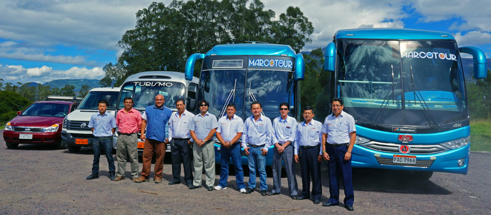

<div class="limiter">
  <div class="container-login100">
    <div class="row"> 
      <div class="col-xs-12 col-sm-12 col-md-12 mx-auto datos">
          TRANSPORTE ECUADOR
      </div>
      <div class="col-xs-12 col-sm-12 col-md-12 mx-auto wrap-login100">
          Transportes Ecuador es una cooperativa de transporte interprovincial de pasajeros y encomiendas en Ecuador. <br>
          Sus principales recorridos son Quito a Guayaquil y Guayaquil a Quito. En su flota de buses cuentan con 54 Unidadades equipadas con <br>
          Aire Acondicionado, Sistema de Internet Wi-fi, Television y Música.
      </div><br><br><br>
    </div>
    
  </div>
</div>